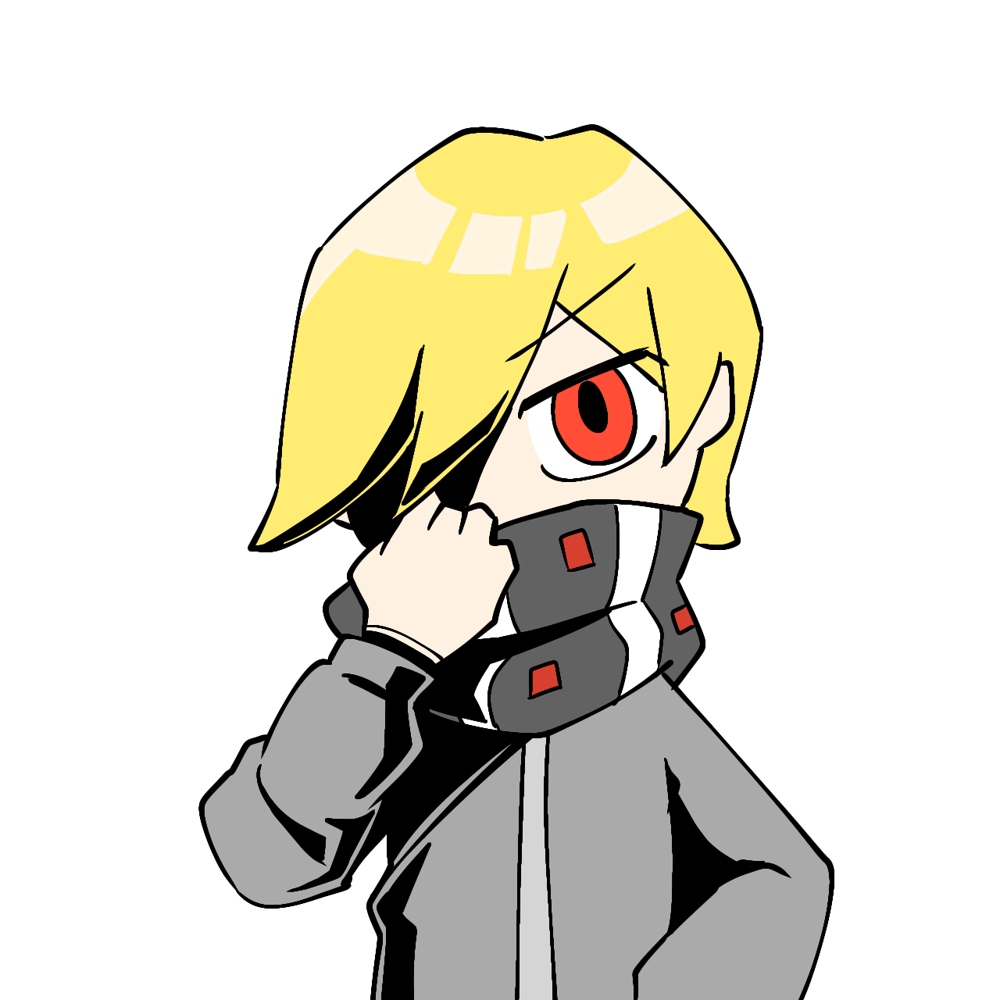
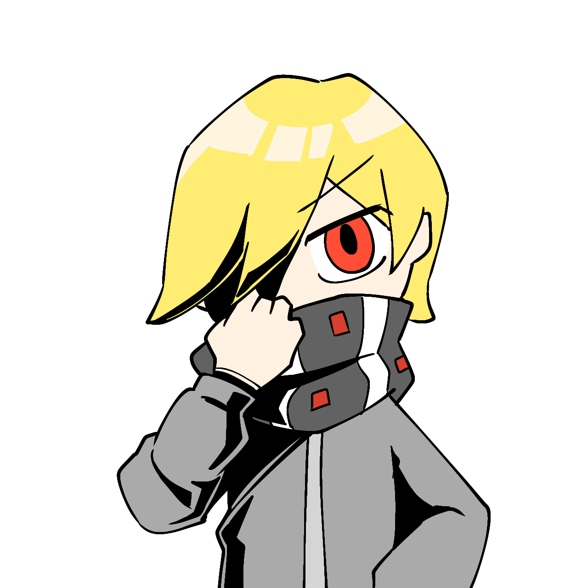

魔法泡麵 "MaInNo"
“心結廚房之所以是心結廚房，絕對不是一個人與一個人之間有心結。”
一碗普通的魔法泡麵，也是廚房的創始人之一。 平時是一名普通的外送員，卻有著與次元外生物打得有來有回的能力。 帶著新鮮的食材回家烹飪新鮮的心結，努力開發著不一樣的心結體驗。
“心結廚房之所以是心結廚房，絕對不是一個人與一個人之間有心結。”
一碗普通的魔法泡麵，也是廚房的創始人之一。 平時是一名普通的外送員，卻有著與次元外生物打得有來有回的能力。 帶著新鮮的食材回家烹飪新鮮的心結，努力開發著不一樣的心結體驗。
